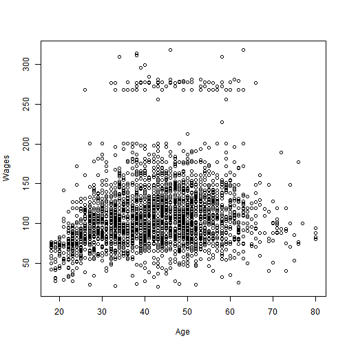

Data products Final Assignment is about creating a shiny app that has some widgets and dynamic updates to the content on user data updates (Use of reactive function()). I created a shiny app to display the Wages for different ages.
Venkata
Data products Final Assignment is about creating a shiny app that has some widgets and dynamic updates to the content on user data updates (Use of reactive function()). I created a shiny app to display the Wages for different ages.
Summary of the dataset.
## year age sex maritl
## Min. :2003 Min. :18.00 1. Male :3000 1. Never Married: 648
## 1st Qu.:2004 1st Qu.:33.75 2. Female: 0 2. Married :2074
## Median :2006 Median :42.00 3. Widowed : 19
## Mean :2006 Mean :42.41 4. Divorced : 204
## 3rd Qu.:2008 3rd Qu.:51.00 5. Separated : 55
## Max. :2009 Max. :80.00
##
## race education region
## 1. White:2480 1. < HS Grad :268 2. Middle Atlantic :3000
## 2. Black: 293 2. HS Grad :971 1. New England : 0
## 3. Asian: 190 3. Some College :650 3. East North Central: 0
## 4. Other: 37 4. College Grad :685 4. West North Central: 0
## 5. Advanced Degree:426 5. South Atlantic : 0
## 6. East South Central: 0
## (Other) : 0
## jobclass health health_ins logwage
## 1. Industrial :1544 1. <=Good : 858 1. Yes:2083 Min. :3.000
## 2. Information:1456 2. >=Very Good:2142 2. No : 917 1st Qu.:4.447
## Median :4.653
## Mean :4.654
## 3rd Qu.:4.857
## Max. :5.763
##
## wage
## Min. : 20.09
## 1st Qu.: 85.38
## Median :104.92
## Mean :111.70
## 3rd Qu.:128.68
## Max. :318.34
##
##Plot between Wages and Ages.
plot( Wage$age, Wage$wage, ylab = "Wages", xlab = "Age", data = Wage)
## Warning in plot.window(...): "data" is not a graphical parameter
## Warning in plot.xy(xy, type, ...): "data" is not a graphical parameter
## Warning in axis(side = side, at = at, labels = labels, ...): "data" is not
## a graphical parameter
## Warning in axis(side = side, at = at, labels = labels, ...): "data" is not
## a graphical parameter
## Warning in box(...): "data" is not a graphical parameter
## Warning in title(...): "data" is not a graphical parameter

Shiny app is created to display the relationship between Wages and Ages. I used lineat regression model for this purpose. On selecting the age, the respective Wage is plotted on the graph.